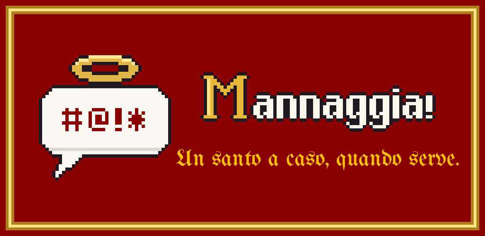
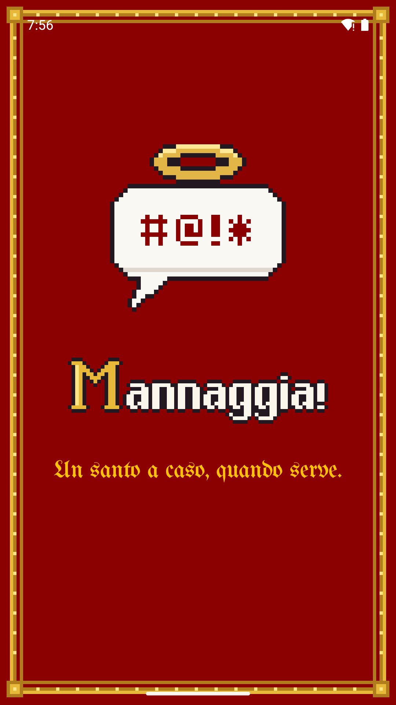
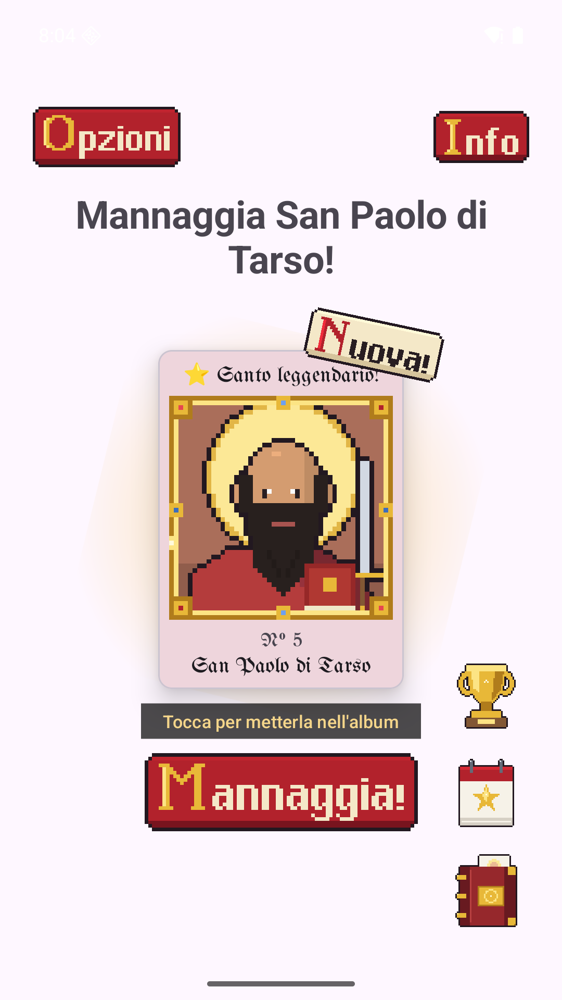
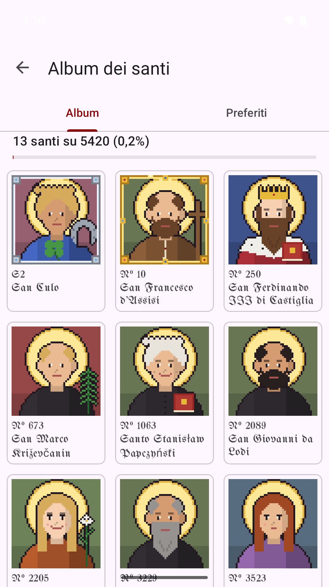

Server giù? Deploy del venerdì andato male? Mannaggia invoca per te uno degli oltre 5000 santi e beati del calendario. È un'app Android gratuita, erede di mannaggia.sh, lo storico script dei sistemisti italiani.
L'arrivo sul Google Play è vicino: serve un test chiuso con almeno 12 tester.



Cosa fa
- Un santo a caso con un tocco, una scossa, dal widget o dalle Impostazioni rapide.
- Un album di figurine in pixel art: ogni santo invocato si aggiunge alla collezione.
- Trofei segreti, con colori, cornici e formule d'invocazione da sbloccare.
- Figurine da regalare agli amici con un link, e quadri dei tuoi santi preferiti.
- La frase letta dalla sintesi vocale del telefono.
Privacy
Funziona offline, non chiede permessi di rete e non raccoglie dati: niente pubblicità, account o tracciamento. Leggi l'informativa.
Software libero, licenza GPL-3.0. Segnala un problema o proponi un'idea · Offrimi un caffè